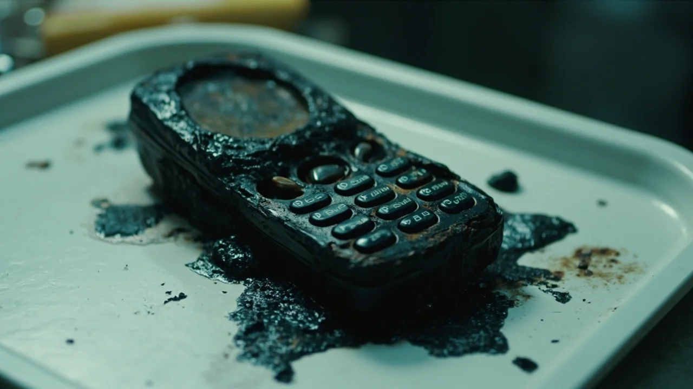
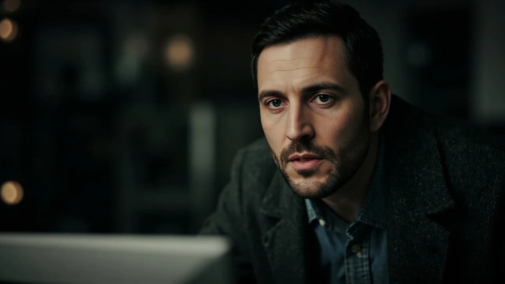
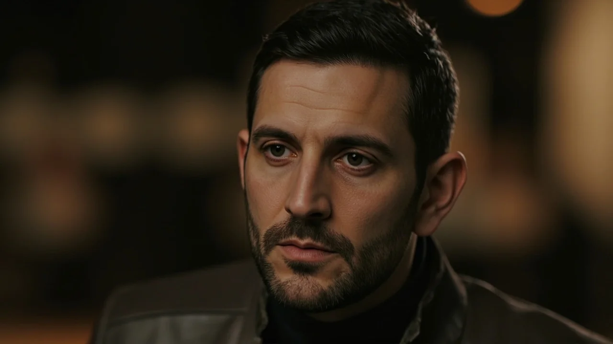
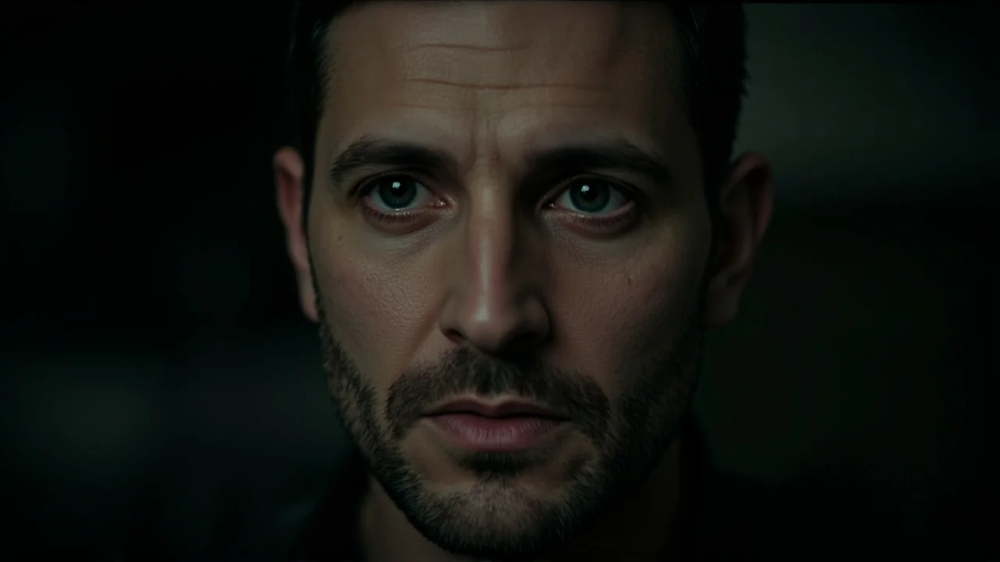

El estaño derretido desprendía un olor acre a resina quemada que ni los dos extractores de aire del taller conseguían disipar. Sobre la bandeja de teflón blanco, iluminado por el haz circular del microscopio de soldadura, el teléfono parecía un pedazo de carbón mineral recogido de una escombrera. La carcasa de policarbonato se había fundido sobre el chasis de aluminio hasta formar una masa vidriosa y negra; la pantalla ya no existía, sustituida por una costra opaca de burbujas petrificadas.
Marcos Soria soltó la pinza de precisión, se frotó los ojos con el dorso del puño y miró la etiqueta de ingreso pegada a la bandeja. El expediente judicial llevaba el número doscientos catorce y procedía de la limpieza final del solar de Torres del Viento, el bloque residencial del distrito norte donde quince años atrás doce vecinos perecieron asfixiados en los descansillos de la tercera planta. El dispositivo había permanecido enterrado bajo una losa de hormigón desprendida en el foso del ascensor hasta que las excavadoras municipales removieron los cimientos la semana anterior.
—Si sacas algo de esa piedra pómez, te pago las cañas de todo el mes —le había dicho su jefe de laboratorio al marcharse a mediodía, dejando el cierre del turno en sus manos.
Marcos perseguía la satisfacción minuciosa de resucitar los circuitos descartados por otros técnicos. Durante cuatro horas rebajó con bisturí de diamante las capas de silicio vitrificado hasta alcanzar el módulo integrado de la memoria eMMC. Los buses de datos estaban sulfatados, pero el chip central conservaba tres de sus terminales de lectura intactos. Con pulso firme, soldó tres microfilamentos de cobre de cero coma dos milímetros y los conectó a la interfaz de puente térmico del ordenador forense.
Cuando introdujo el comando de arranque a bajo nivel, la consola del monitor parpadeó. Una línea verde atravesó la pantalla: tabla de particiones recuperada. De los dieciséis gigabytes de almacenamiento interno, el ochenta por ciento estaba irremisiblemente carbonizado, pero una carpeta temporal del sistema de audio arrojaba seis archivos en formato AMR.
Marcos cargó el primer archivo en el reproductor de ondas. La fecha de modificación del metadato lo dejó paralizado sobre el teclado: catorce de septiembre del año en curso. Apenas tres semanas atrás.
Frunció el ceño. Comprobó el reloj interno del controlador físico de la placa base: el cristal de cuarzo estaba calibrado. No había desfase temporal por pila agotada. Pulsó reproducir con los auriculares puestos.
El sonido comenzó con un soplido sordo de viento contra un micrófono saturado. Luego, una respiración honda, pausada, y una voz masculina, de tono neutro y áspero, que hablaba sin prisa:
«Tomás Aranda no llegará a declarar el martes. La barrera del paso a nivel de Valdecillas baja a las nueve y cuarto. Su furgoneta blanca se quedará calada en el tercer raíl cuando el mercancías de carbón entre en la curva sin visibilidad. Doce cruces pesan demasiado para un perito que cobró en billetes grandes».
Marcos se arrancó los cascos de golpe. La sangre le latió con fuerza en las sienes. Abrió el navegador, tecleó el nombre de Tomás Aranda y filtró las noticias locales del día anterior.

En la portada digital del diario provincial aparecía una fotografía nocturna iluminada por los rotativos azules de las patrullas: el coche arrugado contra la topera del tren en el paso a nivel de Valdecillas. El perito judicial del caso Torres del Viento había fallecido a las nueve y diecisiete de la noche del lunes. La causa preliminar apuntaba a un fallo mecánico en el embrague sobre la vía.
La lluvia de octubre repicaba contra los cristales blindados del laboratorio mientras Marcos reproducía el segundo y el tercer audio. Cada pista contenía la misma voz seca, sin titubeos, anotando nombres, matrículas, horarios y desenlaces que ya constaban en las secciones de sucesos de los últimos tres años: un subinspector de policía asfixiado por monóxido de carbono en un garaje cerrado; un aparejador caído desde un andamio en unas obras del puerto; la abogada de la promotora inmobiliaria atropellada en una rotonda solitaria.
Todos ellos habían formado parte de la causa archivada como siniestro fortuito por cortocircuito.
Marcos intentó buscar una explicación lógica en los protocolos forenses. ¿Podía alguien haber implantado un chip moderno en los restos calcinados para despistar la investigación? Era técnicamente imposible: la aleación de estaño y plomo que soldaba la memoria a la placa base del teléfono pertenecía a una partida industrial que la Unión Europea prohibió en el año dos mil seis, justo antes del incendio. El teléfono se había cocido a más de setecientos grados aquella misma noche; la física de materiales no admitía falsificaciones.
Revisó el archivo del cuarto audio. La onda sinusoidal era más densa. Aplicó un filtro de reducción de ruido ambiental para separar la voz del zumbido de fondo.
Al subir la ganancia, el analizador extrajo un tañido metálico regular, seco y estridente: tres toques rápidos, un silencio de dos segundos y tres toques más.
Un pinchazo helado le atravesó la nuca. Aquel compás no era nuevo para él. Durante su infancia en el piso tutelado de acogida de Palencia, y más tarde en las habitaciones de estudiante en Valladolid, una pesadilla idéntica lo despertaba empapado en sudor: un pasillo oscuro, paredes cubiertas de azulejos amarillos y esa misma campana neumática golpeando en el techo con una cadencia implacable.
Buscó en los expedientes digitalizados del Ayuntamiento el informe técnico del edificio Torres del Viento. En la página diecisiete, un anexo firmado por una antigua inspectora de la aseguradora describía el sistema de alarma de incendios instalado en la planta baja: una campana electromecánica marca Bitono con patrón de pulso de tres tiempos. El único informe que denunciaba que las mangueras de agua no tenían presión y que las salidas posteriores habían sido bloqueadas deliberadamente con una cadena de eslabones gruesos.
El nombre de la perito figuraba al pie del documento: Clara Ramos.

Se citaron en una taberna estrecha y desangelada situada a dos manzanas del solar vacío de Torres del Viento, donde ahora solo crecían ortigas entre los restos de solera de hormigón. Clara Ramos vestía una gabardina marrón desgastada por los inviernos y sostenía un vaso de café humeante entre unas manos de uñas cortas y nudillos inflamados por la artrosis.
Cuando Marcos extrajo de su mochila la bolsa de pruebas antiestática con el bloque de baquelita derretida y la dejó sobre el hule de la mesa, Clara no la tocó. Se limitó a mirarla con la fijeza de quien reconoce una alimaña que creía enterrada.
—¿De dónde has sacado esto? —preguntó ella con una voz ronca de tabaco negro.
—De la excavación del foso. Me llegó al taller para peritaje de archivo.
Marcos abrió su ordenador portátil, conectó un divisor de auriculares y le tendió uno a la mujer. Reprodujo el fragmento donde la voz describía el paso a nivel de Valdecillas y el zumbido de la alarma industrial.
Clara escuchó sin pestañear. Su mandíbula se tensó hasta que los músculos del cuello se marcaron como cuerdas bajo la piel marchita. Cuando la grabación terminó, se quitó el auricular despacio y lo depositó junto a su taza.
—Tomás Aranda no se mató por un fallo en el embrague —dijo ella en un susurro áspero—. Tomás cobró cuatro millones de pesetas en el noventa y siete por certificar que la puerta de servicio del callejón estaba abierta durante la evacuación. Yo vi el candado, chico. Vi los eslabones cortados con cizalla por los bomberos cuando ya no quedaba nadie vivo dentro. Me quitaron del informe al día siguiente y me jubilaron de oficio dos años después.
—Esa voz sabe exactamente lo que pasó —insistió Marcos, inclinándose hacia adelante—. Pero el teléfono lleva quince años enterrado en las cenizas. ¿Quién era el dueño del aparato?
Clara levantó la mirada y lo observó por primera vez con un detenimiento quirúrgico: recorrió la línea de sus cejas rectas, la cicatriz pequeña que le partía el nacimiento de la oreja izquierda y la forma angulosa de sus manos apoyadas sobre la mesa. Su expresión mudó de la desconfianza al estupor.

—El dueño del teléfono era Miguel Soria —soltó la mujer, con una calma que sonó a sentencia—. El vigilante de mantenimiento de la finca.
Marcos sintió que el suelo de la cafetería se desvanecía bajo sus botas.
—Mi apellido es Soria porque me asignaron ese nombre en el centro de acogida de San Juan —balbuceó—. Mis padres murieron en un accidente en la carretera de la costa.
—Tus padres no murieron en ninguna carretera, muchacho —replicó Clara, sin apartar los ojos de su rostro—. A Miguel Soria no lo encontraron entre los escombros de la tercera planta porque Miguel huyó antes de que llegaran las motobombas. Pero a ti te sacó un policía municipal del callejón trasero. Estabas sentado en la acera, cubierto de hollín, con doce años recién cumplidos y un juego de llaves maestras colgando del cinturón con un mosquetón de latón.
Marcos tragó saliva con dificultad. Se llevó la mano de manera instintiva al bolsillo del chaleco, donde guardaba desde hacía dos décadas el viejo mosquetón de latón que siempre usaba para las llaves de su coche.
—El juez instructor ordenó cerrar el expediente del menor en cuarenta y ocho horas —continuó Clara, bajando aún más la voz—. Dijeron que el crío estaba en choque traumático y que no recordaba nada. Te cambiaron la fecha en la partida de nacimiento y te mandaron a Palencia para que nadie pudiera vincular al vigilante huido con el seguro de indemnización de la promotora. Si la puerta estaba cerrada por orden de la empresa, pagaba el consorcio; si la cerró el vigilante para cubrir un robo en los trasteros, la culpa recaía sobre un muerto o un fantasma.
La lluvia arreciaba cuando Marcos volvió a encerrarse en el laboratorio. Las luces principales del edificio estaban apagadas; solo brillaba la lámpara de brazo articulado sobre la mesa de trabajo, arrojando una elipse de claridad fría sobre el teléfono fósil y el teclado del ordenador.
Le temblaban los dedos. Las palabras de Clara Ramos resonaban en su cabeza con la pesadez de una losa. Abrió el cajón inferior de su banco de herramientas, sacó su cartera de piel vieja y extrajo su certificado de nacimiento doblado en cuatro. La tinta azul de la fecha de registro tenía un tono ligeramente distinto sobre el año; un raspado minúsculo, casi imperceptible a simple vista, pero innegable para cualquiera acostumbrado a trabajar con microscopios.
Había sido él. Él había estado allí.
Cargó el quinto archivo de audio en el programa de análisis espectral. El gráfico de frecuencias mostraba dos canales de entrada diferenciados, como si el procesador del teléfono hubiera registrado una llamada en curso entre dos interlocutores en lugar de una nota de voz aislada.
Pulsó reproducir.
La primera voz sonó entrecortada, húmeda por el pánico y la desesperación. Era la voz de un hombre maduro, con el jadeo de quien corre por unas escaleras angostas envueltas en humo espeso:
«¡Marcos! ¡Marcos, abre la verja de abajo! ¡El tiro de la escalera se ha encendido y no pueden bajar los del tercero! ¿Dónde has metido la cadena?».
Un silencio de tres segundos congeló la estancia. Luego, desde el segundo canal del teléfono, surgió una respuesta.
La voz era pausada, sin temblor, grave y densa. No era la voz de su padre.
Era su propia voz.
La voz con la que hablaba cada día en el taller, con el mismo timbre preciso y la misma inflexión mesurada que usaba al dictar los partes periciales ante el micrófono:
«No voy a abrirla. Porque si salen, todos sabrán lo que encontramos en el cuarto de calderas».
«¡Están los niños de los maestros arriba, por Dios!», aulló la primera voz al otro lado del altavoz. «¡Marcos, abre!».

«Ya es tarde», respondió su voz grabada. «Tú firmaste los recibos del gasoil diluido con disolvente. Si el bloque no arde entero esta noche, mañana entra la policía judicial. Tira el móvil al foso y baja por la cornisa».
La pista de audio concluyó con un golpe sordo, el chasquido metálico de un pestillo deslizándose en su guía y el bramido destructor del fuego devorando una estructura de madera.
Marcos se apartó de la mesa como si los componentes electrónicos quemaran. El respaldo de su silla golpeó contra la estantería de herramientas. Se apoyó contra el muro de hormigón del laboratorio con ambas manos, respirando a bocanadas cortas.
«No puede ser», pensó, mientras las lágrimas de rabia y espanto le empañaban la vista. «Yo no estaba allí como un adulto. Yo tenía doce años. Esa no puede ser mi voz».
Miró el bloque de plástico y metal que descansaba sobre la bandeja de teflón. Los microfilamentos soldados al chip de memoria titilaban bajo la luz blanca. No había conexión a la red de telefonía ni tarjeta SIM en el módulo; la batería original era una masa de litio calcinado incapaz de retener un solo milivoltio. El dispositivo dependía únicamente de la corriente continua de tres coma tres voltios que el analizador forense inyectaba a través del cable puente.
Entonces, la pantalla de su monitor emitió un pitido agudo.
En la ventana del explorador de archivos del sistema, donde hasta ese instante solo figuraban las cinco pistas recuperadas, apareció un nuevo elemento con extensión AMR. La marca de tiempo indicaba las cero horas y cuarenta y dos minutos de la madrugada actual.
El teléfono fósil sobre la bandeja comenzó a emitir una vibración sorda, lenta, haciendo tintinear las pinzas metálicas contra la porcelana.
Marcos se acercó al monitor con el corazón golpeándole en la garganta. Hizo doble clic sobre el nuevo archivo.
El altavoz del ordenador chasqueó dos veces. Una respiración infantil, tímida y rota por el llanto, susurró en mitad del silencio:
«Si estás escuchando esto, Marcos... significa que todavía no lo recuerdas todo».